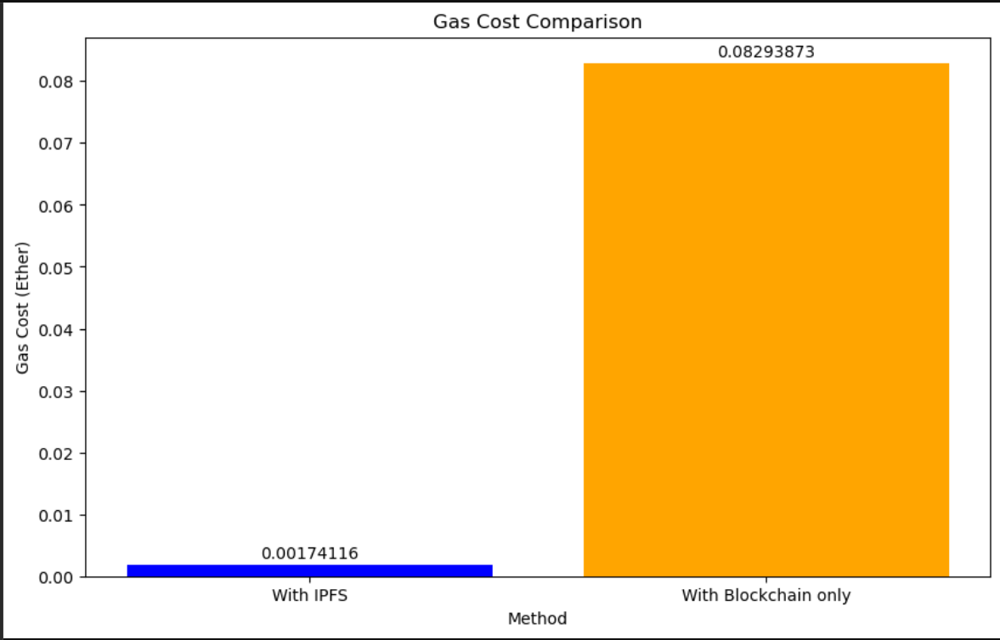

About Secusto
The document management space has changed drastically in the last few years, even within the legal and financial domains. Besides paper systems, there are electronic solutions now. Along with these benefits, however, such a shift comes with a lot of challenges. The digital repositories, while providing easy access, are prone to security threats such as data breaches and hardware failures, especially in centralized server environments. The security, accessibility, and advanced analysis issues remain in the management of legal and financial documents, and the quick recovery and analysis of data stand at the core of business decision-making. Traditional content management systems are usually not able to cope with these requirements, being insufficient in providing the advanced search and filtering functionalities that are crucial for efficient document management. Aiming to handle these issues systematically, a novel document management system is suggested, which will be designed with modern technology to provide reliable solutions. With the InterPlanetary File System (IPFS) as the core of the new environment, SecuSto has better security and dependability than those centralized servers do. By distributing files across peer-to-peer nodes, IPFS eliminates the possibility of a single point of failure, thus ensuring data integrity and resiliency. Moreover, end-to-end encryption mechanisms are used to encrypt the sensitive document’s content, thereby preventing its disclosure and allowing access only to authorized parties. Blockchain, a technology with its reputation for immutability and transparency, is central to data integrity and authenticity. With the help of the blockchain, the hashes of the encrypted documents are anchored; thus, a tamper-proof record of document history is created, which is irrefutable evidence of document authenticity and prevents unauthorized alterations. Along with these fundamental technologies, a variety of text processing methods are brought into use to amplify document processing abilities. Being more than a simple OCR, this system is based on complex algorithms such as PDF to text conversion, key point summarization, and translation. These features not only make document searching and analysis speedy but also help to overcome language barriers, thus making the documents accessible to a wider audience. Besides, the system is empowered with machine learning algorithms, and therefore it can do advanced financial analysis and predictions. From reading financial data placed in various formats, including CSV and XLSX, machine learning models can see future trends and performance, allowing users to utilize the insight for strategic decision-making. To wrap it up, the proposed document management system is a complete solution to the problems that legal and financial professionals are facing. Through the use of cutting-edge technologies like IPFS, end-to-end encryption, blockchain, text processing, and machine learning, SecuSto provides improved security, better ease of access, and more effective processing, changing the way people go about document management and eventually enabling them to make rational choices with confidence.
Cost Efficeincy
The bar chart below highlights a comparison in gas costs between two ways of storing data: using IPFS (InterPlanetary File System) with blockchain, and using blockchain alone. The findings reveal a notable difference in expenses, with the IPFS method costing only 0.00174116 Ether (Average of 6 transactions), whereas using just blockchain costs 0.08293873 Ether (Average of 6 transactions). This significant gap shows how much more economical it is to use IPFS, which stores the actual data off-chain and only keeps a reference on the blockchain. This approach reduces the amount of data stored on the blockchain, leading to lower costs. The results hold true across different sizes of inputs and conditions, proving the effectiveness and scalability of the IPFS method. By combining IPFS with blockchain, not only are gas costs cut down, but data integrity and availability are also maintained through a decentralized network, making it a highly effective solution for applications that need frequent and large-scale data storage.
